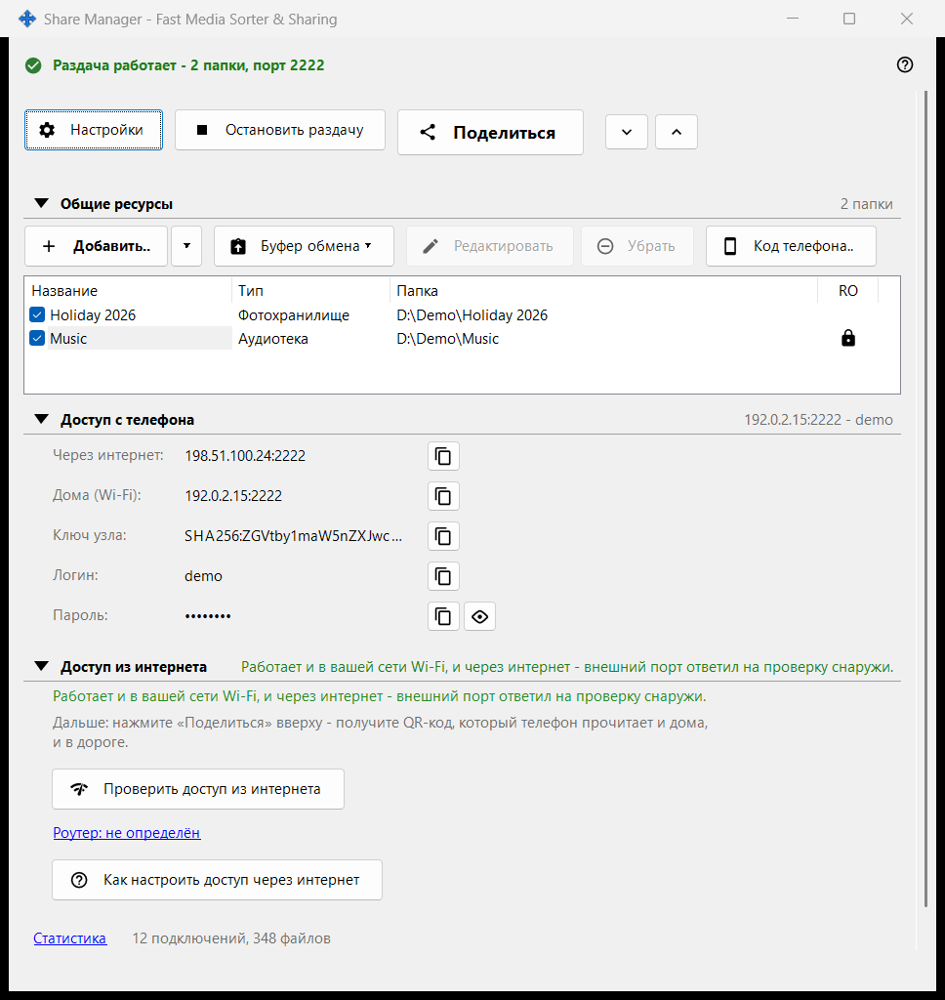
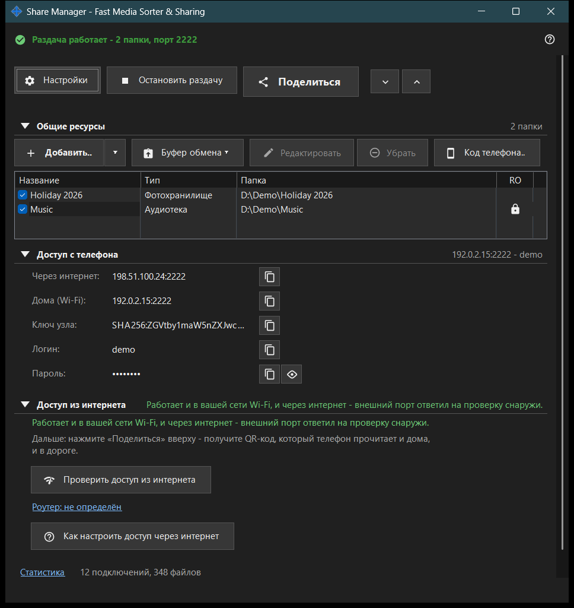

Share Manager - Fast Media Sorter & Sharing
Назначение
Главное окно Share Manager, локальной службы раздачи и расписаний. В нём список папок, которые этот ПК раздаёт на телефон по SFTP; отсюда раздачу запускают и останавливают, выдают код доступа и видят, как телефон попадает на ПК. Операции по расписанию и учётная запись обмена настраиваются на страницах настроек менеджера. Окно открывается из просмотрщика или из значка в трее; закрытие окна оставляет программу в трее.


Порядок действий
- Нажмите «Добавить..» и выберите «Папку..», чтобы добавить папку в список.
- Отметьте папку галочкой: раздаются только отмеченные папки.
- Нажмите «Начать раздачу» (нужна хотя бы одна отмеченная папка).
- Нажмите «Поделиться», чтобы получить QR-код или файл .fmscfg для телефона.
- Для доступа из других сетей откройте группу «Доступ из интернета» и воспользуйтесь двумя её кнопками.
- Когда доступ больше не нужен, нажмите «Остановить раздачу».
Элементы окна
Верхний ряд кнопок
«Настройки» открывают настройки менеджера. Кнопка «Начать раздачу» превращается в «Остановить раздачу», пока сервер работает. «Поделиться» открывает мастер кода доступа и действует только при включённой раздаче; иначе подсказка просит сначала запустить сервер. «Развернуть все» и «Свернуть все» раскрывают и сворачивают группы ниже.
Общие ресурсы
Одна строка на ресурс: галочка и столбцы «Название», «Тип», «Папка». Отмеченная строка раздаётся телефонам; пустой список показывает «Добавьте первый ресурс..». Если снять отметку с последней отмеченной папки, окно спросит, останавливать ли раздачу: подключённые телефоны будут отключены. Попытка начать раздачу без отмеченных папок лишь показывает подсказку «Сначала добавьте папку и отметьте её галочкой.».
Доступ с телефона
Данные подключения для телефона или любого SFTP-клиента: адрес через интернет и дома (Wi-Fi), IPv6, ключ узла, логин и пароль. «Показать пароль» раскрывает его, «Скрыть пароль» прячет снова. Текст под группой объясняет, достаёт ли телефон до ПК только дома или и из других сетей.
Доступ из интернета
«Проверить доступ из интернета» открывает окно проверки доступа. «Как настроить доступ через интернет» открывает инструкцию по роутеру. Ссылка «Роутер: ..» открывает страницу самого роутера; если роутер не найден, она читается «Роутер: не определён». В группе есть предупреждение: любой, кто узнает адрес, логин и пароль, получит доступ ко всем общим папкам, поэтому не публикуйте QR-код и файл .fmscfg и выключайте раздачу, когда закончили.
Статистика
Под группами стоит ссылка «Статистика» и короткая сводка вида «N подключений, M файлов». Ссылка открывает окно текущего состояния раздачи с полными счётчиками.
Когда функции сервера выключены
Пока серверный компонент не включён, окно показывает «Функции сервера выключены» и кнопку «Включить функции сервера..», которая открывает окно «Включить общий доступ к папкам». Если компонент общего доступа не найден в установке, окно сообщает об этом и просит переустановить приложение.
Настройки менеджера · Настройки общего доступа SFTP · Настройки сервера обмена